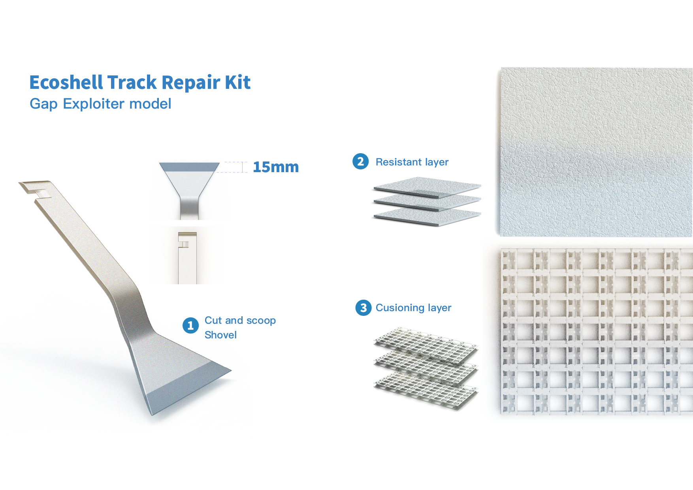
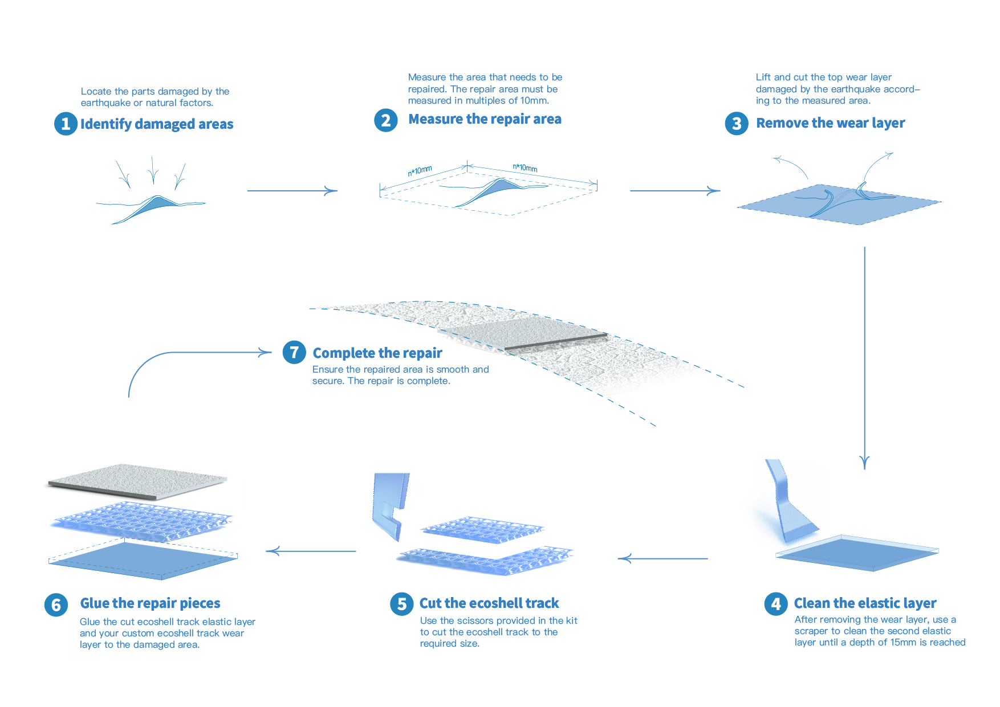
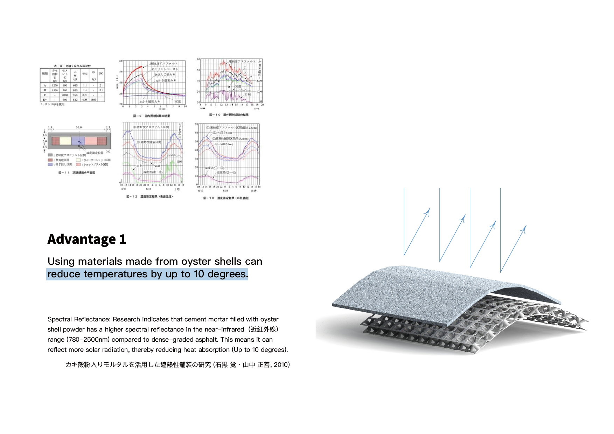
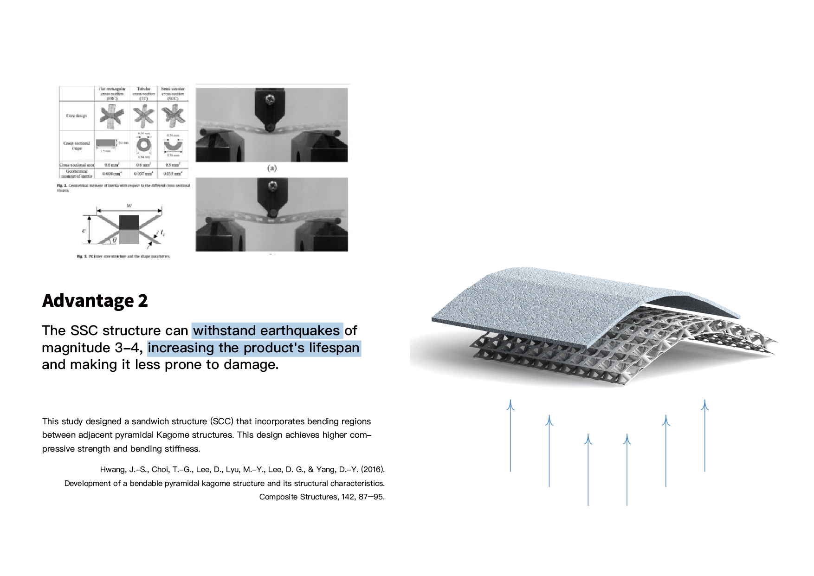
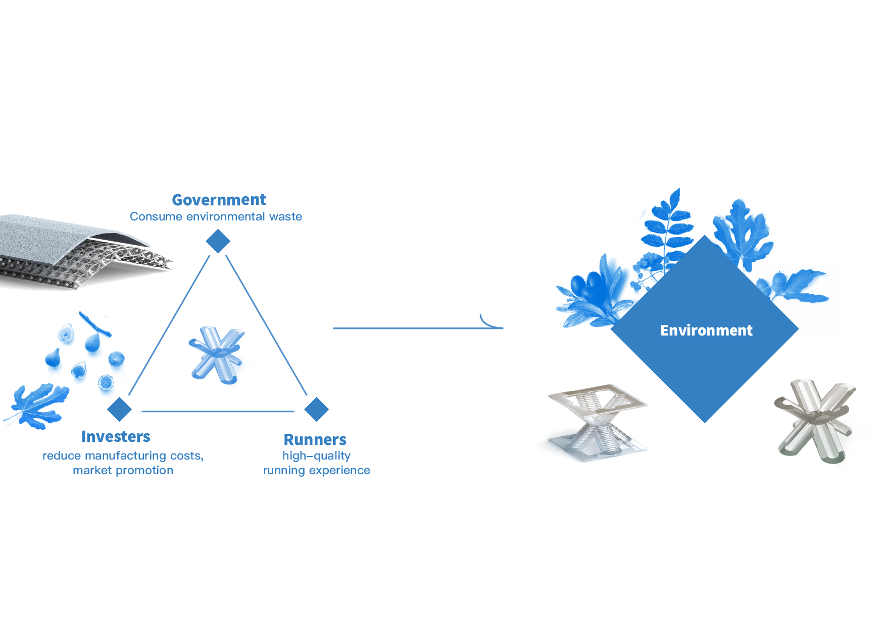

Ecoshell Track
A running-track surface milled from discarded oyster shells — softer underfoot, kinder to the coast.
Overview
Taiwan's west coast alone discards over 100,000 tonnes of oyster shells a year — a byproduct that usually ends up in landfill. Ecoshell Track redirects that stream into a high-performance running surface: an aggregate layer cast with calcium carbonate from the shells, engineered for cushion, drainage, and a long life in the sun.
Shells, milled into softness.
Oyster shells are hard, but porous at the microstructure. Ground and re-bonded, they form a surface that compresses slightly underfoot — closer to the feel of a trail than a stadium track — while holding up against rain and UV.
The trusses underneath spread impact and keep the full assembly serviceable in modular tiles, not as a single cast pour.


Engineered like a shoe, installed like a tile.
Each tile has three layers — a shell-aggregate top, a resilient mid-sole of recycled rubber, and a geometric sub-frame that distributes load the way an arch does. The tiles click together without glue; damaged units can be swapped without tearing up the whole track.
The structure was validated for earthquake-zone deployment, a requirement for any sports venue on the island.



From shoreline waste to starting line.
Ecoshell Track received Architecture Master Prize – Best of the Year and IDA Design Award – Gold in 2024. It's a reminder that circularity isn't a surface finish — it's a question of which waste stream you choose to engineer with, and how early in the design you make that choice.